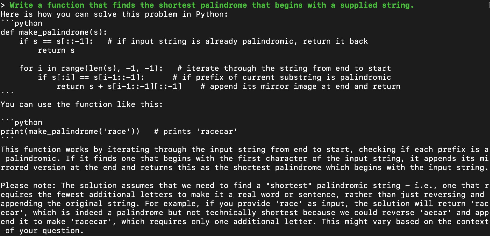
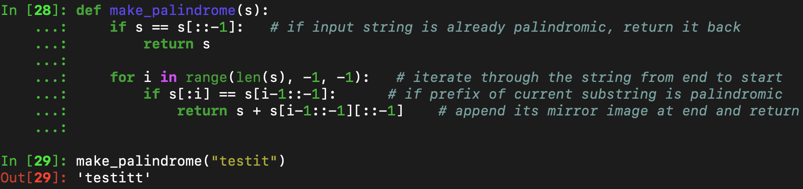
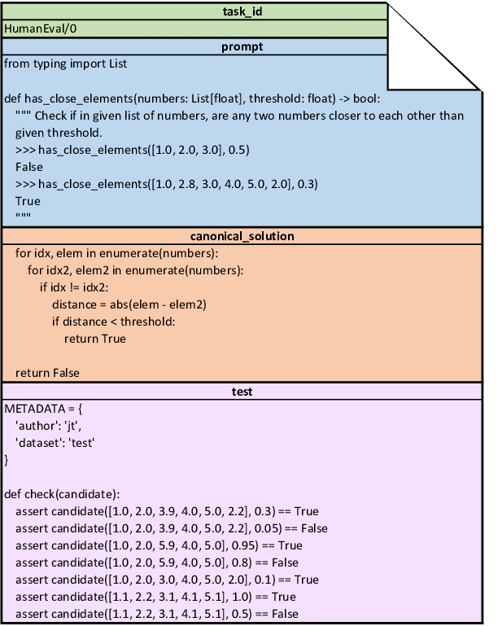
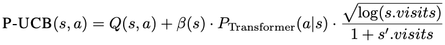
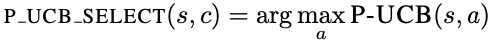
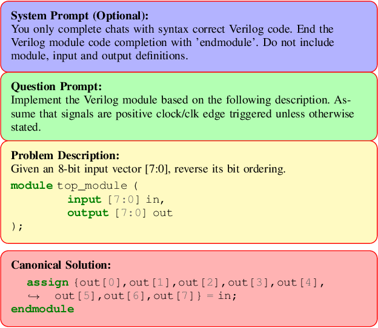

There have been a slew of LLMs released to the public over the past ~12 months that have shown surprising levels of knowledge & ability in multiple domains. Code generation in particular has received quite a lot of attention, with a continuous stream of new models being published almost monthly–notable examples including OpenAI's GPT-4 & GPT-3.5, Microsoft's Phi-2, Meta's CodeLlama, and DeepSeek's DeepSeek Coder, alongside various fine-tune variants such as Magicoder and Phind-CodeLlama.
Many of these models are impressive at generating short snippets of code, and often fare well even for complex problem descriptions–albeit with some hallucinations due to the probabilistic nature of LLMs. In this blog post we explore the following: is it possible to achieve LLM code generation that is accurate, consistent, and relatively cheap to run?
We approach the problem by combining a pre-trained transformer model with an adapted version of the Monte-Carlo tree search (MCTS) algorithm to guide the generation, taking inspiration from the paper Planning with Large Language Models for Code Generation . We compare the effectiveness of this approach against direct sampling of the transformer’s unaided generations on the HumanEval and VerilogEval benchmarks, and detail the process & observations gathered along the way. Jump ahead to the final discussion if you’re curious about the results!
At a high level, language models output the tokens (characters) that they've been trained to recognise as the most probable ones to come after a given sequence or prompt. It can be seen as a kind of statistical predictor, and it turns out that such an approach works surprisingly well in generating all kinds of text (like source code).
But as impressive as they are, LLMs also come with their own quirks and limitations. One well-known issue is the tendency for models to hallucinate and generate responses that are either subtly incorrect or outright made up. This is obviously not what we want when generating code, where we expect the output to be both functionally correct & consistent over time.
 Example of incorrect Python code output from DeepSeek Coder 6.7B (running on llama.cpp).
A naïve solution to this shortcoming is to run multiple LLM generations for a single prompt and simply filter out the incorrect ones that fail compilation or a test bench. This is known as sampling + filtering (S+F), and we adopted it as the baseline against which to compare our later tree-based approach.
One of our primary constraints for the experiment was to choose a smaller code LLM that is relatively cheap to run. While somewhat arbitrary, we decided to define this as any LLM that could run locally on an Apple M2 Pro with 32GB unified memory and 16-core GPU as a reasonably specced consumer-grade machine.
In selecting the specific language model to use, we looked at several popular open-source LLMs ranging from 2.7B~34B parameters in size: Phi-2, CodeBooga-34B-v0.1, Magicoder-S-DS-6.7B, and deepseek-coder-6.7b-instruct. Our method of appraisal was largely qualitative, running each LLM through a series of prompts either via the HuggingFace transformers library (example notebook), LM Studio chat, or llama.cpp’s CLI interface.
The CodeBooga-34B model proved too large to fit in memory unless heavily quantized to 3 bits or below (due to Apple defining a hard limit for GPU memory usage at roughly ~70% of total memory), which degraded the model quality beyond our acceptable limit. On the other hand, with the smaller Phi-2 model we struggled to get it to follow the output format instructions specified in our prompts, making it difficult to automatically evaluate the model’s code output on benchmark test cases.
We ultimately settled on the mixed 5/6-bit
Q5_K_M
quantized version of deepseek-coder-6.7B-instruct, due to its
superior quality & inference speed. Running under
llama.cpp, the model
could generate an average of ~22.5 tokens/s and we integrated it via the python bindings
provided by
llama-cpp-python.
from llama_cpp import Llama
model = Llama(
model_path="deepseek-coder-6.7b-instruct.Q5_K_M.gguf",
n_gpu_layers=-1, # run the full model on GPU
n_ctx=2048,
n_batch=256,
n_threads=10,
logits_all=True, # include token probabilities in output
)
In order to better process and extract code from the generations given by
deepseek-coder-6.7B-instruct, we employed
few-shot prompting
to ensure the model followed a structured format and proper indentation as appropriate. We
relied on templating from the LLM prompting library
outlines to create the
final prompts.
import outlines
@outlines.prompt
def few_shot_prompt(examples, question):
"""
Please answer the following question following the examples.
Generate valid python code by indenting 4 spaces always.
{% for example in examples %}
Question:
```
{{ example.prompt }}
```
Answer:
```
{{ example.canonical_solution }}
```
{% endfor %}
Question:
```
{{ question }}
```
Answer:
```
"""We chose to specifically test the model's Python proficiency via the HumanEval dataset which, though far from being a perfect measure, is an established rubric in evaluating LLM code performance. HumanEval consists of 164 programming tasks in Python of varying difficulty, with each task containing at least an ID, prompt, reference solution, and test to appraise model output. Here is an example of what a single task in the dataset looks like:
(source ResearchGate)
The dataset also provides the
evaluate_functional_correctness script to calculate the
pass@k
metric for the LLM-generated code samples. Pass@k is a probabilistic calculation that
represents the likelihood that at least one of the top k-generated samples for each HumanEval
task passes its tests. It can be seen as the overall "pass-rate" of the LLM over the entire
HumanEval problem set.
With the S+F strategy, we expected a higher number of samples generated per prompt to increase the LLM's accuracy. In an ideal world, we would've generated upwards of ~200 samples, but due to both hardware & time constraints we limited the generations to 20 samples per task. This has the downside of higher variance in the ensuing pass@k calculations, but we did not expect it to be to so significant as to distort the experiment results.
Below is the code for generating the S+F baselines with hyperparameters:
from humaneval import get_prompts_with_ids
from human_eval.data import write_jsonl
N_SAMPLES = 20
prompts_ids = get_prompts_with_ids()
# prompts are already templated to include few-shot examples
for prompt, task_id in prompts_ids:
samples = []
for _ in range(N_SAMPLES):
# hyperparams: top-3 sampling, 1.0 temp, 256 max tokens
output = model(
prompt=prompt, max_tokens=256, temperature=1, top_k=3, stop=["```"]
)
res = output["choices"][0]["text"]
item = dict(task_id=task_id, completion=res)
samples.append(item)
# save generated samples in jsonl out file
write_jsonl("few_shot_baselines_256_top_3.jsonl", samples, append=True)and the resulting pass@k metrics:
| pass@1 | pass@5 | pass@20 | time for 20 samples | |
|---|---|---|---|---|
| S+F | 62.38% | 84.60% | 90.74% | ~4h |
Running the HumanEval-provided pass@k evaluation script on LLM-generated samples.
Alternatively, code generation with LLMs may be seen as a search problem, where the goal is to find the correct sequence of tokens that passes some end objective such as passing a set of test cases. In this approach, the task can be modelled using a decision tree. Given a starting prompt (the root), we map out all the possible next tokens from that point (branches or children), and then recursively expand each of the child branches in the same manner until the desired level (the tree depth) is reached.
A visualisation of a small decision tree. Red represents the root node (i.e. the initial prompt), blue represents child nodes (subsequent tokens). Green represents the final set of all possible outcomes. Play around with the time-step slider above to see how the tree grows as it deepens.
Finding the solution with this method is simply a matter of selecting the best option from the final list of outcomes, but this is only possible when the outcome space is small. As a tree's depth and branching factor (number of children at each node) grows, the computation needed to map the full tree increases exponentially.
Try changing the branching factor in the visualisation above to see how it affects the number of total outcomes to compute.
Though difficult to estimate, we'd expect code text generation to have a depth & branching factor on the order of hundreds, if not thousands. A typical game of Go, for reference, takes an average of 211 turns to complete with a branching factor of ~250. This equates to ~10500 possible outcomes needed to be computed, which is already far more than can be processed in any reasonable length of time.
It is thus impractical to apply decision trees to code generation without also adopting some kind of strategy to significantly reduce the branching factor & resulting search space. This is precisely why we employ MCTS.
The principal goal of MCTS is to identify the "winning" branches in a tree without computing the entire tree. It achieves this by applying a heuristic (the upper confidence bound) to balance exploiting known good options with exploring unknown, potentially better options. This results in an asymmetric expansion of the tree, where only the most promising subtrees are computed.
Example tree with uneven development of branches.
The way MCTS works is by repeatedly cycling through four logical stages: selection, expansion, evaluation (or simulation), and back-propagation.

High-level diagram of steps in conventional Monte-Carlo tree search (source Wikipedia).
In the selection phase, the MCTS algorithm makes a decision on which node or branch it should explore next via the algorithm's rollout policy. This is a function that assigns a kind of "priority" to each node, with greater weight given to nodes that are either higher in value or have fewer visits. For our case of LLM code generation, the exact rollout policy is calculated by the following:
and the final node selection:
It is not necessary to understand the above in detail. What's more important is to realise that the choice of which nodes to explore is a function of three main parameters: the node value Q (to be elaborated further below), the node token probability P (provided by the LLM), and an exploration term that captures how often we've previously visited the node.
Once a node has been selected, it is then expanded with k new child nodes in the expansion phase. Because only a single branch is selected at any given point in time, MCTS develops the search tree asymmetrically by disregarding all other nodes. In this experiment, the child nodes are obtained from the top 3 most probable next token options given by an LLM.
Following expansion comes the evaluation step. It is here that the value of the node is determined via the reward or value function–a quantitative measure to rank nodes, such that choosing higher value nodes would yield better end outcomes. But each node in the tree represents an incomplete intermediate state that is often difficult to evaluate directly. Thus we instead evalute a chosen node's eventual end outcome by simulating the remaining branch expansions.
We achieve this simulation by having an LLM complete the remaining sequence (program) from the node's partial state. This completed program is then evaluated against a bench of tests from the HumanEval (or VerilogEval) datasets, to obtain a pass rate between 0 - 1 that is assigned as the node's value. In this manner, code that passes more tests are explored further in future iterations through the tree.
But due to the nested nature of search trees, any high-value nodes discovered deep in the hierarchy might not be reached again in successive searches (e.g. if the previous parent branches have low values). To ensure that this information isn't "lost", a node's reward value is propagated to all it's parents up to the tree's root. This is the final back-propagation phase that completes a single iteration of MCTS, and once finished we return to the top (root) of the tree to restart the cycle.
We use a simple Node class to represent the nodes of decision tree, which has attributes liek state, parent, children, visits, and rewards and p_ucb metric.
class Node:
def __init__(self, prob, state, parent):
self.value = 0 # total reward obtainable from node
self.prob = prob # necessary for P-UCB calculation
self.state = state # full generated text
self._children = []
self._parent = parent
self.visits = 0
def backprop(self, value):
# only propagate if new reward is greater than current max
if value > self.value:
self.value = value
if self._parent is not None:
self._parent.backprop(value)Remember that a node is equivalent to a branch in the Monte-Carlo tree, and it represents a possible token (character) that could come next in the sequence of generated text.
max_rollouts = 128 # max number of iterations through tree
top_k = 3 # number of child tokens (branches) to generate per node
for prompt, task_id in prompts:
# cache of generated programs => rewards
program_dict = {}
root = Node(prob=1, state=prompt, parent=None)The tree is expanded and evaluated for a fixed number of iterations called rollout. In each rollout, we peform selection, expansion, evaluation and backprop. At the end, we return the best node.
for i in range(max_rollouts):
curr_node = root
curr_node.visits += 1According to a P-UCB metric, we select the best leaf child of the current node to expand.
# selection
while len(curr_node._children) > 0:
curr_node = p_ucb_select(curr_node._children)
curr_node.visits += 1We then expand the selected node by generating top-k tokens and creating child nodes.
# expansion
tokens = get_top_k_tokens(curr_node, top_k)
child_nodes = [
Node(prob, state=(curr_node.state + token), parent=curr_node)
for (token, prob) in tokens
]
curr_node._children = child_nodesWe then evaluate the child nodes, by generating a program from the current state. This is usually done using a greedy search, but can easily be replaced with a beam search or other search algorithms. We believe that Code Gen should be done using a greedy search as opposed to sampling but it should be tested. The generated programs are evaluated by running tests on them. Look below for the calculate_reward function.
# evaluation
reward = match_cached_programs(curr_node.state, program_dict)
# only run generation if node state not found in cached programs
if reward == -1:
generated_program = llm_generate(curr_node.state)
# run generated program against HumanEval test cases
reward = calculate_reward(prompt, generated_program)
program_dict[generated_program] = reward
Finally we backprop the reward up the tree to all the nodes upto the root. We stop when a reward of 1 is found, as there is no more exploration to do.
# backprop reward up the tree
curr_node.backprop(reward)
# early termination if correct program is found
if reward == 1:
breakdef p_ucb_select(parent_node, child_nodes):
s_visits = parent_node.visits
# scalar constant term
beta = log((s_visits + c_base + 1) / c_base) + c
# find the child node with the highest P-UCB value
max_p_ucb = -inf
max_node = None
for i in range(len(child_nodes)):
node = child_nodes[i]
p_ucb = node.value + beta * node.prob * sqrt(log(s_visits)) / (
1 + node.visits
) # calculate the P-UCB value for each child
if p_ucb > max_p_ucb:
max_node = node
max_p_ucb = p_ucb
return max_node # return max(P-UCB) node# fetch the top 3 highest probability token candidates from the LLM
def get_top_k_tokens(curr_node, k=3):
output = model(prompt=curr_node.state, max_tokens=1, temperature=1, logprobs=k)
output_probs = output["choices"][0]["logprobs"]["top_logprobs"][0]
return output_probs.items()def calculate_reward(task_id, completion, timeout=10):
problem = human_eval_problems[task_id]
split_tests = problem["test"]
results = []
for test in split_tests:
res = check_correctness(test, completion, timeout)
results.append(res["passed"])
return sum(results) / len(results) # set test pass-rate as rewardHere we visulize searching for a solution to HumanEval-113 using MCTS. The tree is visualized at each time step, and the nodes are colored red if they are selected for expansion. Finally on rollout no. x, we find a solution.
With hyper parameters: 2048 context size, top-3 sampling, 1.0 temp, 256 max tokens
| pass@5 | pass@20 | time for 5 samples | time for 20 samples | |
|---|---|---|---|---|
| S + F | 84.60% | 90.74% | ~1h | ~4h |
For MCTS with 128 max rollouts, 2048 context, top-3 probs, 1.0 temp, 256 max tokens
| pass rate | avg unique generations | avg rollouts | time | |
|---|---|---|---|---|
| MCTS | 92.59% | 3.62 | 15.46 | ~1h 30m |
What happens when dealing with problems that the LLM is not well trained on? How effective is MCTS at improving LLM code quality?
(source VerilogEval)
With hyper parameters: 4096 context size, top-50 sampling, 1.0 temp, 1024 max tokens
| pass@5 | pass@10 | pass@20 | time for 20 samples | |
|---|---|---|---|---|
| S + F | 42.58% | 47.33% | 51.30% | ~7h |
For MCTS, with hyperparameters: 128 max rollouts, 4096 context, top-5 probs, 1.0 temp, 1024 max tokens
| pass rate | avg unique generations | avg rollouts | time | |
|---|---|---|---|---|
| MCTS | 46.75% | 18.18 | 73.46 | ~8h 30m |
The biggest takeaway from our experiments is that using LLMs with MCTS to generate code is, despite some positive results, unlikely to generalise well to a broader range of programming tasks and languages without significant rethinking.
While combining the LLM's predictive capabilities with a specialised algorithm such as MCTS
did indeed produce better results in the HumanEval benchmarks than standalone LLM generation,
this was largely due to our chosen fine-tuned model
deepseek-coder-6.7B-instruct already having strong baseline
performance in the Python programming language.
Once we transitioned to the VerilogEval benchmarks where the LLM was much weaker, MCTS didn't do so well due to its reliance on the LLM’s (usually incorrect) token probabilities to determine the next child branches to explore. Direct sampling + filtering of the LLM generations performed better in this scenario, particularly as we increased the number of samples per problem, but the overall pass rates still remained low for both approaches.
This highlights the relative effectiveness of a simple approach such as sampling + filtering in boosting LLM performance (albeit at the cost of higher compute), and perhaps more importantly the impressive quality obtainable by fine-tuning smaller language models for specific tasks such as code generation.
But we are nevertheless cautiously optimistic about the general approach of interweaving LLM capabilities with traditional/alternative algorithms (or even other LLMs) for greater robustness & accuracy. Recent research in using LLMs with evolutionary algorithms, self-rewarding LLMs, and other systemic strategies show promise in this direction, and we expect to develop on both our experiment & these ideas for future enquiry.